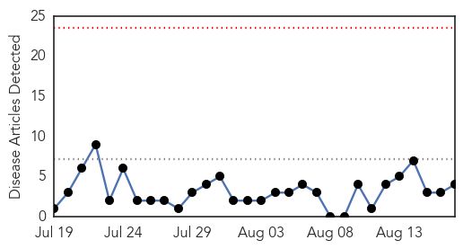
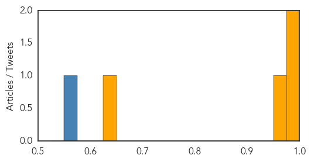

Cholera
30-Day Web Trend
0 alerts, 0 warnings

30-Day Twitter Trend
2 alerts, 0 warnings
Article Locations
Article Confidences
Top Articles:
Top Tweets:
- 0.764
- UNacceptable: @PAHOWHO says cases, death from cholera up in Haiti, DR this year. http://t.co/11o69RDgGa
- 0.756
- RT: "Fight the Outbreak" of cholera in Haiti by sharing this short video on UN accountability: http://t.co/mXqHZ4DuZg Upgrad…
- 0.679
- CNN: U.N. should take responsibility for Haiti's deadly cholera epidemic http://t.co/8uGFY6Q6Hl
- 0.594
- .@GovernorOMalley takes stand on, says should take responsibility for its cholera epidemic in Haiti. http://t.co/2QwOujnkYx
West Nile Virus
30-Day Web Trend
0 alerts, 0 warnings

30-Day Twitter Trend
1 alerts, 0 warnings

Article Locations
Article Confidences

Top Articles:
Top Tweets:
- 0.740
- Flavivirus news: Health officials confirm 4 new West Nile virus cases - WMC Action News 5: Heal... http://t.co/QruHSfU8d5 pathogenposse